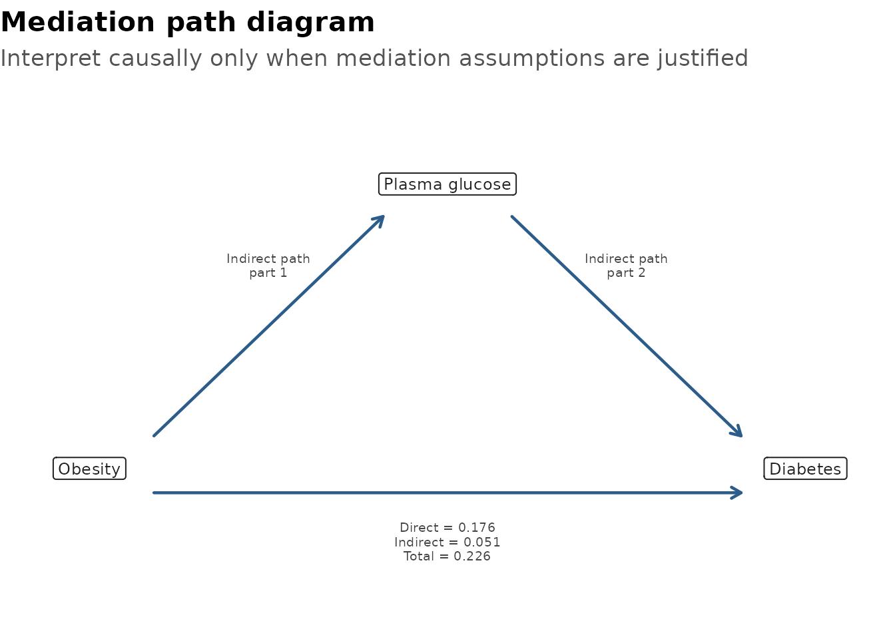
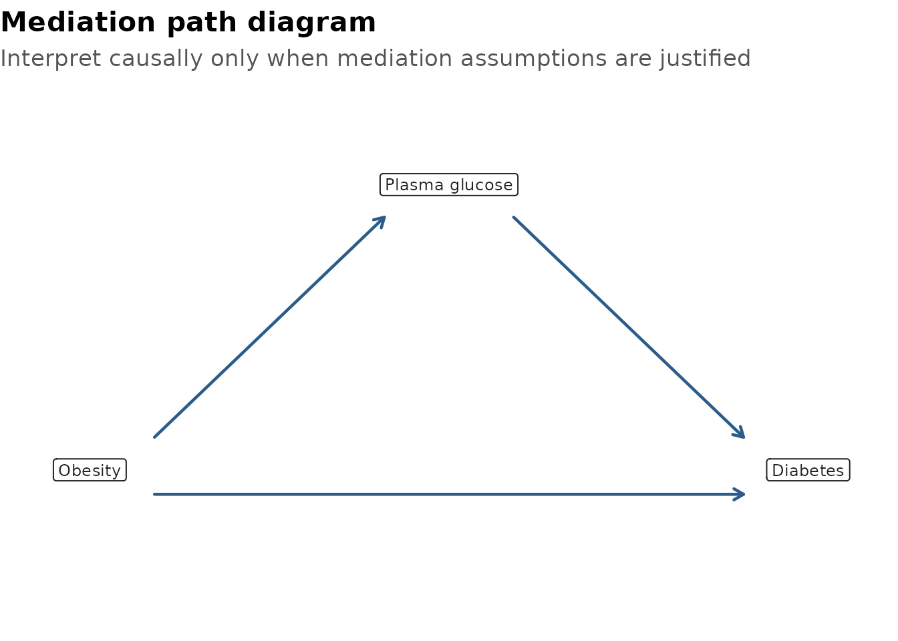
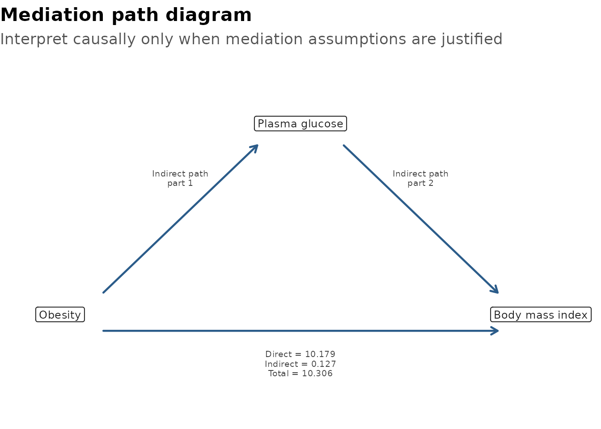

Mediation analysis asks whether part of an exposure-outcome association may pass through an intermediate variable. In health research, that question is usually interesting only after the clinical story, temporal order, and likely confounding structure have already been considered.
gtregression provides a compact workflow for:
- fitting the mediator and outcome models;
- estimating total, direct, indirect, and proportion mediated effects;
- displaying a publication-style table;
- drawing a simple mediation path diagram.
The output is deliberately transparent. It is a model-based aid to interpretation, not proof of causality by itself.
Example Question
This article uses data_diabetes_mediation, a teaching
dataset based on a diabetes risk profile. The example question is:
Does plasma glucose explain part of the association between obesity and diabetes?
library(gtregression)
library(dplyr)
data("data_diabetes_mediation", package = "gtregression")
glimpse(data_diabetes_mediation)## Rows: 724
## Columns: 8
## $ diabetes <fct> Yes, No, Yes, No, Yes, No, Yes, Yes, No, Yes, No, Ye…
## $ obesity <fct> Yes, No, No, No, Yes, No, Yes, Yes, Yes, Yes, No, Ye…
## $ glucose <dbl> 148, 85, 183, 89, 137, 116, 78, 197, 110, 168, 139, …
## $ bmi <dbl> 33.6, 26.6, 23.3, 28.1, 43.1, 25.6, 31.0, 30.5, 37.6…
## $ age <dbl> 50, 31, 32, 21, 33, 30, 26, 53, 30, 34, 57, 59, 51, …
## $ blood_pressure <dbl> 72, 66, 64, 66, 40, 74, 50, 70, 92, 74, 80, 60, 72, …
## $ pregnancies <dbl> 6, 1, 8, 1, 0, 5, 3, 2, 4, 10, 10, 1, 5, 0, 7, 1, 1,…
## $ diabetes_pedigree <dbl> 0.627, 0.351, 0.672, 0.167, 2.288, 0.201, 0.248, 0.1…Logistic Outcome
For a binary outcome, use outcome_approach = logit. The
effects are reported as predicted probability differences, which are
often easier to explain than odds ratios in a mediation table.
For final analyses, use a larger number of bootstrap simulations such
as sims = 500 or sims = 1000. The article uses
a smaller value to keep the example quick to run.
diabetes_med <- mediation_analysis(
data = data_diabetes_mediation,
exposure = obesity,
mediator = glucose,
outcome = diabetes,
covariates = c(age, blood_pressure, pregnancies, diabetes_pedigree),
outcome_approach = logit,
sims = 100,
seed = 123
)
diabetes_med$tableEffect |
Estimate |
95% CI |
p-value |
Interpretation |
|---|---|---|---|---|
Total effect |
0.268 |
0.188 to 0.341 |
<0.001 |
Overall exposure-outcome association |
Direct effect |
0.200 |
0.131 to 0.266 |
<0.001 |
Association not through the mediator |
Indirect effect |
0.068 |
0.037 to 0.106 |
<0.001 |
Association through the mediator |
Proportion mediated |
0.255 |
0.137 to 0.392 |
<0.001 |
Share of total effect through the mediator |
Effects are predicted probability differences from logistic outcome models. | ||||
Comparison: Obesity = Yes vs No; mediator = Plasma glucose; outcome = Diabetes. Bootstrap replicates = 100. | ||||
Adjusted for Age, Diastolic blood pressure, Number of pregnancies, Diabetes pedigree function. | ||||
Causal interpretation requires DAG-supported no-unmeasured-confounding and correct temporal-order assumptions. | ||||
The returned object keeps the table body, fitted models, bootstrap draws, and exposure comparison values available for checking.
diabetes_med$table_body## effect Effect estimate conf.low conf.high
## total total Total effect 0.26811037 0.1882239 0.3413496
## direct direct Direct effect 0.19978127 0.1306665 0.2664345
## indirect indirect Indirect effect 0.06832911 0.0368084 0.1057748
## proportion proportion Proportion mediated 0.25485440 0.1365921 0.3920930
## p.value Interpretation
## total 0 Overall exposure-outcome association
## direct 0 Association not through the mediator
## indirect 0 Association through the mediator
## proportion 0 Share of total effect through the mediator
diabetes_med$values## $reference_value
## [1] "No"
##
## $exposure_value
## [1] "Yes"
diabetes_med$models$mediator##
## Call:
## stats::lm(formula = .mediation_formula(mediator, c(exposure,
## covariates)), data = df)
##
## Coefficients:
## (Intercept) obesityYes age blood_pressure
## 69.9217 9.4519 0.5894 0.3050
## pregnancies diabetes_pedigree
## -0.2092 10.7711
diabetes_med$models$outcome##
## Call: stats::glm(formula = f, family = stats::binomial(), data = df)
##
## Coefficients:
## (Intercept) obesityYes glucose age
## -7.220509 1.241446 0.035385 0.014817
## blood_pressure pregnancies diabetes_pedigree
## -0.002162 0.106363 1.028275
##
## Degrees of Freedom: 723 Total (i.e. Null); 717 Residual
## Null Deviance: 931.9
## Residual Deviance: 674.4 AIC: 688.4
head(diabetes_med$boot)## total direct indirect proportion
## 1 0.3002124 0.2192066 0.08100578 0.2698283
## 2 0.2902380 0.2287934 0.06144464 0.2117043
## 3 0.3568782 0.2291300 0.12774815 0.3579601
## 4 0.2234355 0.1744756 0.04895991 0.2191232
## 5 0.2609932 0.2003587 0.06063449 0.2323221
## 6 0.3104067 0.2250761 0.08533069 0.2748996Path Diagram
plot_mediation() draws the exposure, mediator, outcome,
and the direct and indirect paths.
plot_mediation(diabetes_med)
If the figure is being used only to explain the causal structure, hide the estimates.
plot_mediation(diabetes_med, show_estimates = FALSE)
Quoted Names
Quoted column names and stored character vectors work too. This is useful inside scripts, functions, and Shiny-style workflows.
exposure_var <- "obesity"
mediator_var <- "glucose"
outcome_var <- "diabetes"
covariate_vars <- c(
"age", "blood_pressure", "pregnancies", "diabetes_pedigree"
)
med_quoted <- mediation_analysis(
data = data_diabetes_mediation,
exposure = exposure_var,
mediator = mediator_var,
outcome = outcome_var,
covariates = covariate_vars,
outcome_approach = "logit",
sims = 100,
seed = 456
)
med_quoted$tableEffect |
Estimate |
95% CI |
p-value |
Interpretation |
|---|---|---|---|---|
Total effect |
0.268 |
0.191 to 0.337 |
<0.001 |
Overall exposure-outcome association |
Direct effect |
0.200 |
0.136 to 0.268 |
<0.001 |
Association not through the mediator |
Indirect effect |
0.068 |
0.035 to 0.097 |
<0.001 |
Association through the mediator |
Proportion mediated |
0.255 |
0.131 to 0.379 |
<0.001 |
Share of total effect through the mediator |
Effects are predicted probability differences from logistic outcome models. | ||||
Comparison: Obesity = Yes vs No; mediator = Plasma glucose; outcome = Diabetes. Bootstrap replicates = 100. | ||||
Adjusted for Age, Diastolic blood pressure, Number of pregnancies, Diabetes pedigree function. | ||||
Causal interpretation requires DAG-supported no-unmeasured-confounding and correct temporal-order assumptions. | ||||
Linear Outcome
For a continuous outcome, use outcome_approach = linear.
In this example, the outcome is body mass index, so the effects are
reported as mean differences.
med_linear <- mediation_analysis(
data = data_diabetes_mediation,
exposure = obesity,
mediator = glucose,
outcome = bmi,
covariates = c(age, blood_pressure, pregnancies, diabetes_pedigree),
outcome_approach = linear,
sims = 100,
seed = 789
)
med_linear$tableEffect |
Estimate |
95% CI |
p-value |
Interpretation |
|---|---|---|---|---|
Total effect |
10.306 |
9.844 to 10.864 |
<0.001 |
Overall exposure-outcome association |
Direct effect |
10.179 |
9.716 to 10.755 |
<0.001 |
Association not through the mediator |
Indirect effect |
0.127 |
0.027 to 0.241 |
<0.001 |
Association through the mediator |
Proportion mediated |
0.012 |
0.003 to 0.023 |
<0.001 |
Share of total effect through the mediator |
Effects are mean differences from linear outcome models. | ||||
Comparison: Obesity = Yes vs No; mediator = Plasma glucose; outcome = Body mass index. Bootstrap replicates = 100. | ||||
Adjusted for Age, Diastolic blood pressure, Number of pregnancies, Diabetes pedigree function. | ||||
Causal interpretation requires DAG-supported no-unmeasured-confounding and correct temporal-order assumptions. | ||||
plot_mediation(med_linear)
How To Report
A compact reporting sentence might look like this:
In this teaching analysis, plasma glucose explained part of the model-based obesity-diabetes association. Effects were estimated on the predicted probability difference scale using logistic outcome models and bootstrap confidence intervals.
The table footnote records the exposure comparison, mediator, outcome, bootstrap replicates, and adjustment variables so readers can see what was estimated.
What Not To Claim
Mediation estimates should not be treated as automatic causal proof. A cautious analysis should consider:
- whether the exposure clearly precedes the mediator;
- whether the mediator clearly precedes the outcome;
- whether exposure-mediator, mediator-outcome, and exposure-outcome confounding have been handled;
- whether post-exposure confounders are present;
- whether the model forms are plausible;
- whether a DAG or subject-matter argument supports the causal interpretation.
Use the table and plot to support interpretation after that thinking has been done.